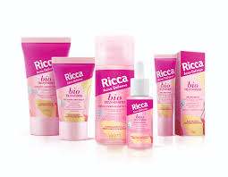
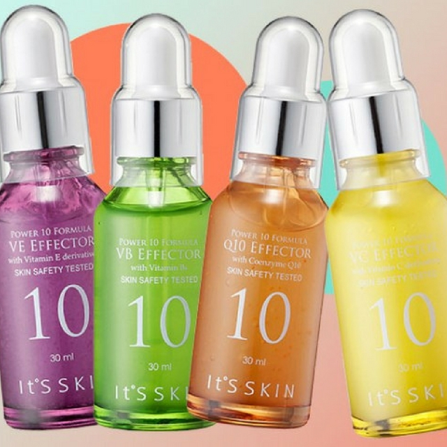
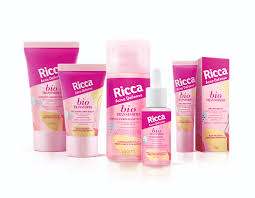
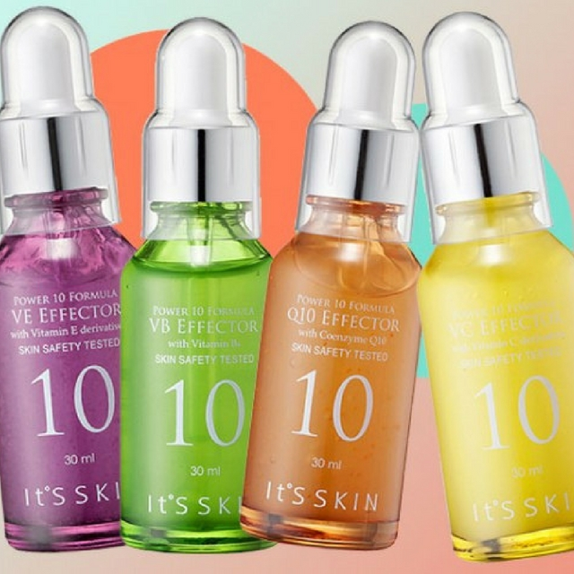

Ao manter sua rotina de skincare, existem alguns cuidados que você precisa ter durante o processo, principalmente com os produtos. O objetivo da skincare é fazer com que a pele se torne mais saudável e bonita, evitando doenças e manchas que podem influenciar na sua autoestima.
O QUE É SKINCARE?
É uma rotina de práticas criadas diária ou semanalmente para manter a sua pele mais hidratada e luminosa. Cada tipo de pele necessita de uma rotina específica, devido às características como peles secas ou oleosas. Justamente por isso é preciso entender o tipo de pele que você possui para adquirir os produtos que tenham essa característica.
PRODUTOS QUE NÃO PODEM FALTAR NA SUA ROTINA:
Sabonete facial: No dia a dia, é importante limpar profundamente o rosto com um sabonete ou gel de limpeza adequado para o seu tipo de pele.
Hidratante: Hidratante fluido, como um sérum, ou um hidratante consistente, o importante é que ele seque na pele e reponha a água que a sua cútis está precisando. Um hidratante ou sérum também pode ter ação antioxidante, anti-envelhecimento, anti-manchas
Creme de tratamento: No geral, a vitamina C é um produto que costuma ser utilizado de manhã. Ela estimula a produção de colágeno, clareia a pele e melhora a luminosidade, textura e viço. Pela noite, é comum que o uso de ácidos ou cremes mais grossos, para ajudar em qualquer problema cutâneo que você venha a ter.
Protetor solar: A maior causa do envelhecimento da pele, sem contar o câncer de pele. Para minimizar esses efeitos, é essencial que o filtro solar tenha FPS mínimo de 30. Ter uma textura agradável e fixar bem na pele também são pontos a se considerar.
PASSO A PASSO:
Limpeza;
Hidratação;
Tratamento;
Proteção.
Pagina 2